Granitowe
Kamień naturalny — bardzo twardy, odporny na ścieranie, wilgoć i temperaturę. Każdy parapet ma niepowtarzalny rysunek.
Grubość 20 lub 30 mm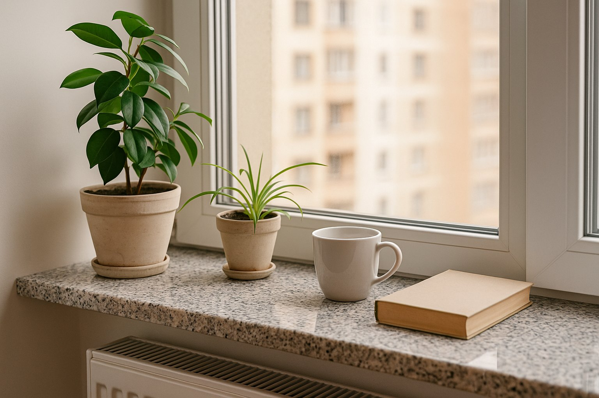
Parapety wewnętrzne i zewnętrzne z kamienia, konglomeratu, MDF, PCV, stali i aluminium — dopasujesz je do stolarki okiennej, elewacji i charakteru wnętrza.
Parapety wewnętrzne wykańczają ścianę pod oknem i są ważnym elementem aranżacji. Do wyboru kamień naturalny, konglomeraty oraz ciepłe w odbiorze MDF i PCV.
Kamień naturalny — bardzo twardy, odporny na ścieranie, wilgoć i temperaturę. Każdy parapet ma niepowtarzalny rysunek.
Grubość 20 lub 30 mm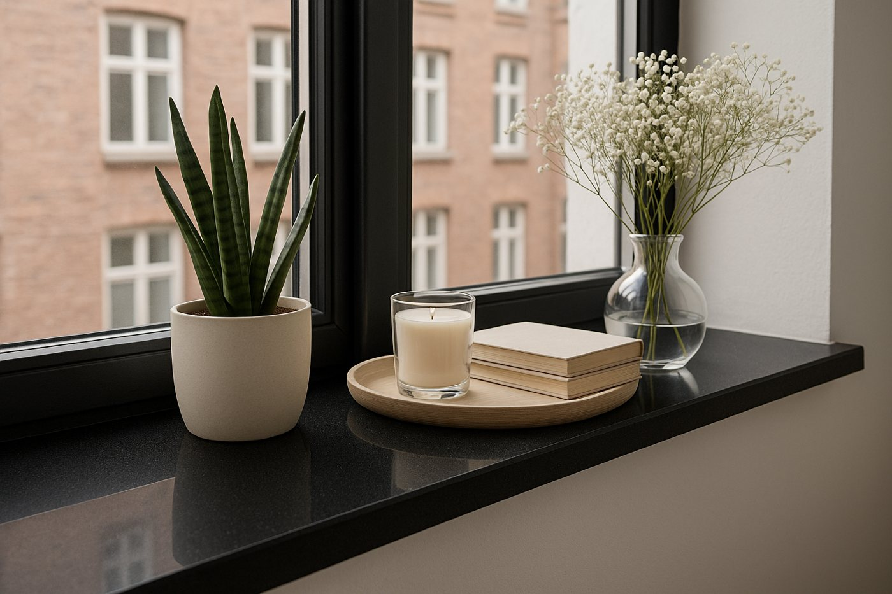
Konglomerat z 90–95% kamienia naturalnego — podwyższona odporność na zarysowania, wilgoć i wysoką temperaturę, modne jednolite barwy.
Grubość 20 lub 30 mm
Konglomerat marmurowy — szlachetny wygląd marmuru w nowoczesnym wydaniu i szeroka paleta jasnych, ciepłych odcieni.
Grubość 20 lub 30 mm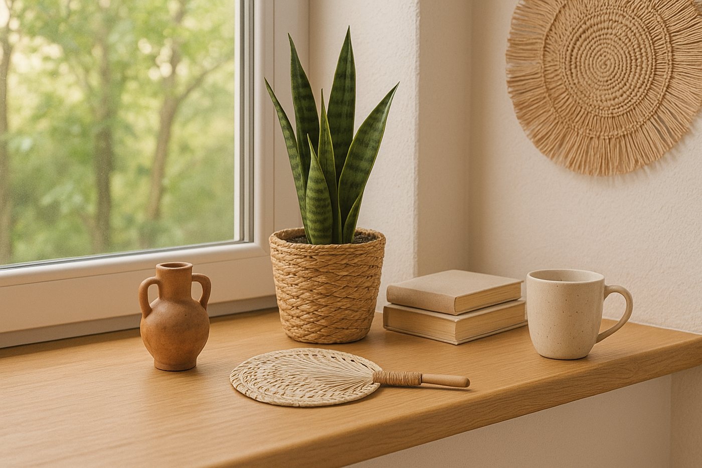
Płyta MDF z naturalną okleiną z drewna — ciepły charakter, łatwy do zgrania z podłogą, drzwiami i meblami.
Grubość 20 mm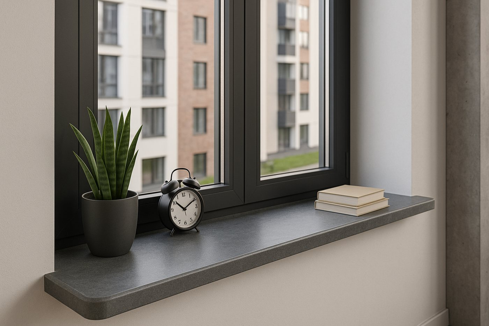
Płyta MDF oklejana laminatem — odporna na zarysowania, wilgoć i UV. Ponad 20 dekorów: od bieli, przez beton, po drewno.
Grubość 20, 25 lub 30 mm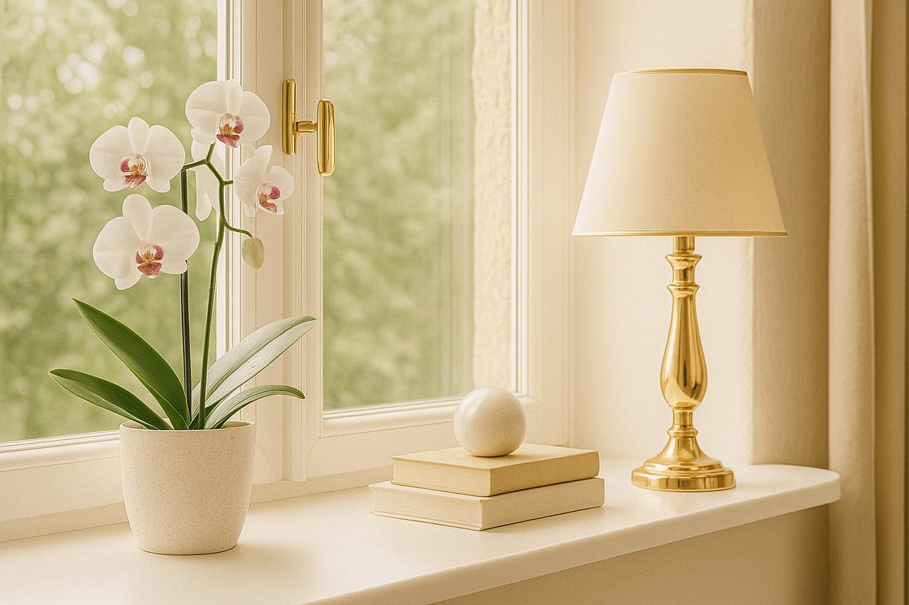
Wodoodporna płyta MDF z gładką, lakierowaną powierzchnią — biel, czerń i antracyt, w macie lub w połysku.
Grubość 20, 25 lub 30 mm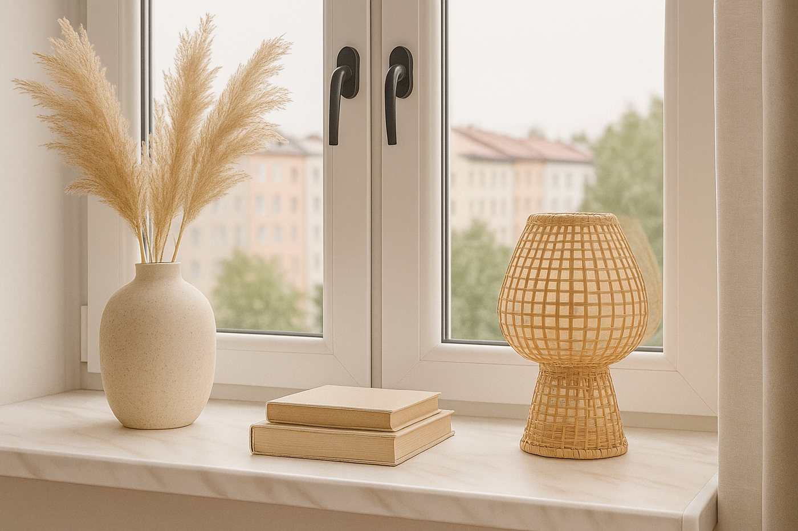
Komorowe profile PCV pokryte okleiną — lekkie, praktyczne i ekonomiczne rozwiązanie.
Długość do 6 m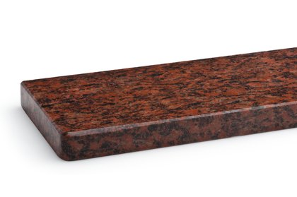
Vanga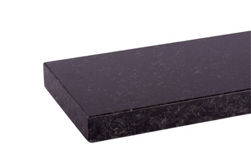
Blue Night Colonial White
Colonial White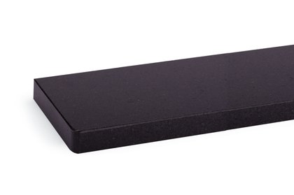
Royal Black Nero Impala
Nero Impala Tan Brown
Tan Brown China Cristal
China Cristal Steel Grey
Steel Grey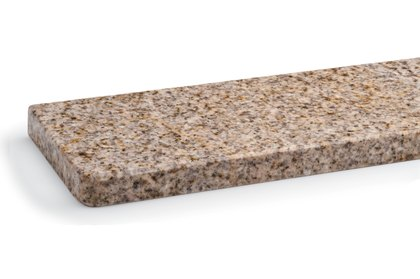
Yellow Pink Rosa BetaBianchissimo
Rosa BetaBianchissimo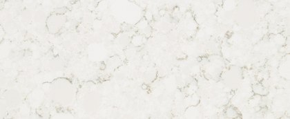
Vittoria White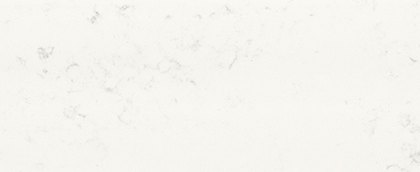
NavonaBlanco Paloma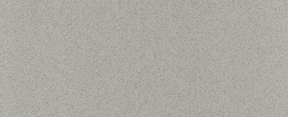
Gris Ceniza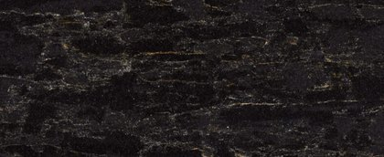
Black Nimbus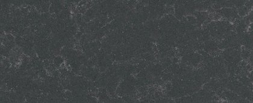
City Dark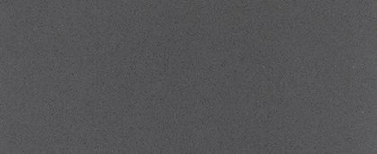
Gris Antracita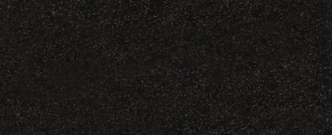
Black Mamba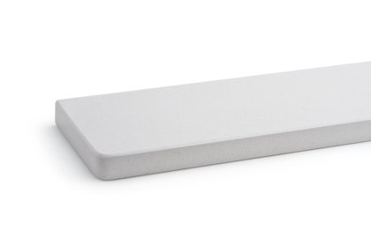
Polare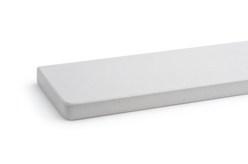
Monte Bianco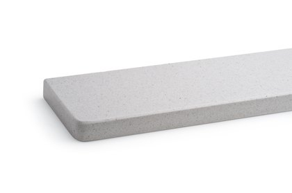
Bianco Carrara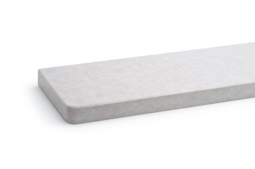
Perla Arte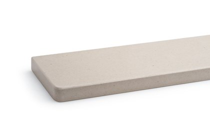
Beige Marfil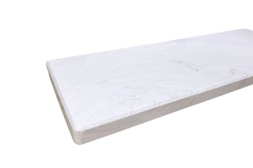
Marmo White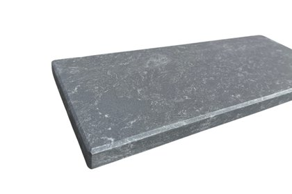
Baltic Grey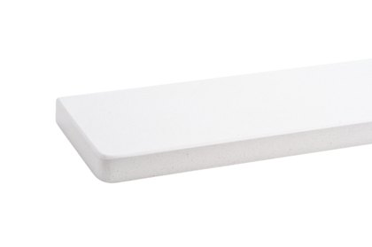
Crystal White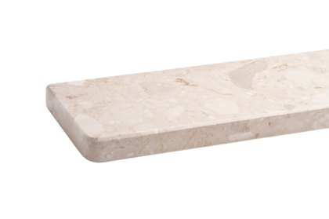
Botticino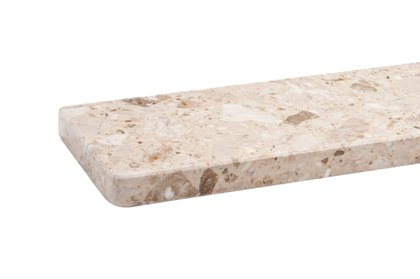
Breccia Aurora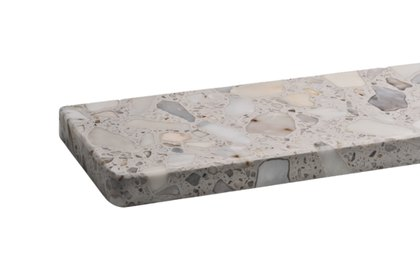
Calacatta Gold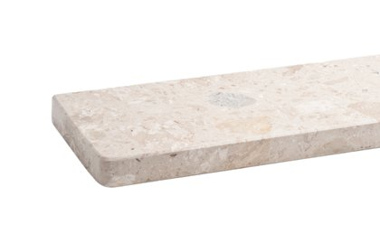
Perlato Appia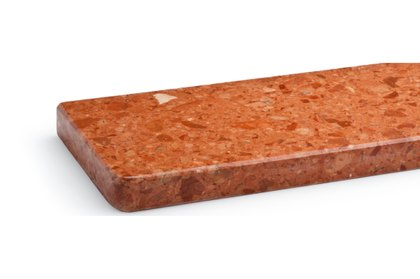
Rosso Asiago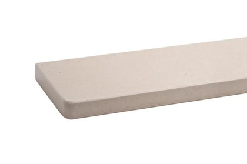
Beige Luna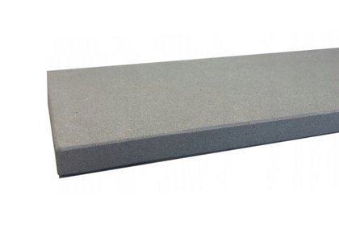
Giorgione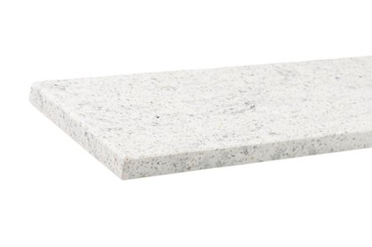
White Iceberg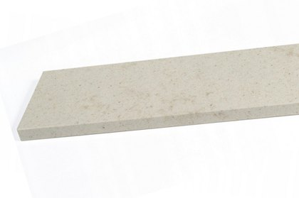
Cotone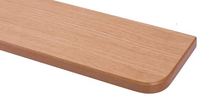
Dąb naturalny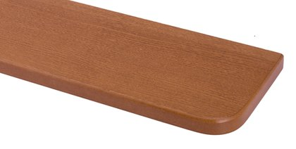
Winchester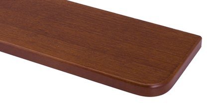
Złoty dąb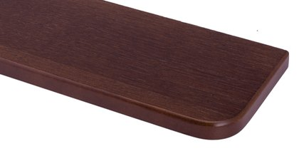
Dąb orzech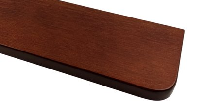
Stary złoty dąb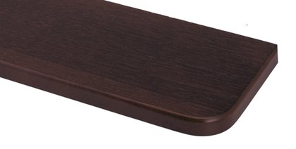
Dąb orzech ciemny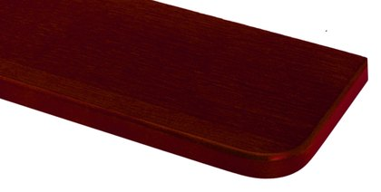
Dąb mahoń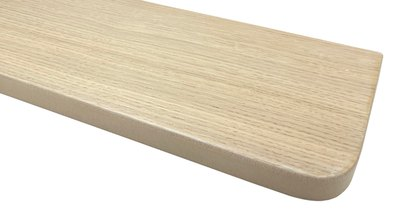
Dąb bielony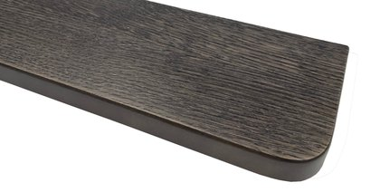
Dąb grafitCream BeigeSubtle NudeSubtle Taupe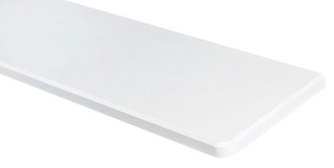
Biały mat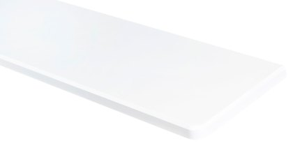
Biały połysk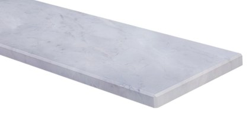
Marmur jasny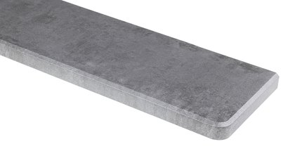
Beton ciemny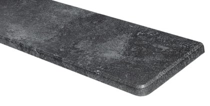
Granit szary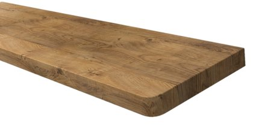
Dąb Ribbeck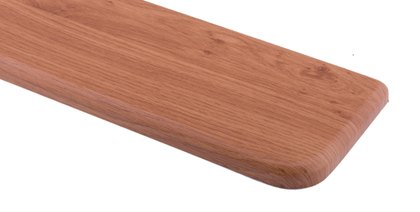
Jasny dąbDąb SonomaDąb naturalnyOrzech Lanzado WinchesterBetonDąb vintageBiałe drewnoDąb WatanDąb LondonDąb ArgosJabłońZłoty dąbAntracytPerła łuskaBiały matBiały połyskBiały wysoki połyskCzarny matMarmurek czarnyMarmurek białyAntracyt RAL 7016 półmatBiałyMarmurOrzechZłoty dąbDąb skandynawskiGrafit
WinchesterBetonDąb vintageBiałe drewnoDąb WatanDąb LondonDąb ArgosJabłońZłoty dąbAntracytPerła łuskaBiały matBiały połyskBiały wysoki połyskCzarny matMarmurek czarnyMarmurek białyAntracyt RAL 7016 półmatBiałyMarmurOrzechZłoty dąbDąb skandynawskiGrafitParapet zewnętrzny odprowadza wodę z dala od elewacji i chroni ją przed zawilgoceniem, dlatego musi być trwały i odporny na warunki atmosferyczne.
Mrozoodporny i praktycznie nienasiąkliwy granit — klasyczny, kamienny wygląd na lata, bez specjalnej konserwacji.
Grubość 20 lub 30 mmNowoczesne parapety z blachy aluminiowej lub stalowej o wyrazistym konturze, lakierowane proszkowo.
Dowolny kolor z palety RALLekka i trwała blacha aluminiowa 1 lub 1,5 mm, odporna na korozję. Profil Standard lub Soft.
3 kolory podstawowe lub dowolny RALAluminium z przetłoczeniami imitującymi płytkę klinkierową — świetnie pasuje do elewacji z cegły i klinkieru.
Profil Contour lub SoftBlacha stalowa 0,7 mm powlekana poliestrem — sprawdzone, ekonomiczne rozwiązanie odporne na warunki atmosferyczne.
Szerokości 100–400 mm, także na wymiarStal z trwałą okleiną drewnopodobną — parapet w kolorze okien w okleinie.
Profil Standard lub Soft Vanga
Vanga Blue NightColonial White
Blue NightColonial White Royal BlackNero ImpalaTan BrownChina CristalSteel Grey
Royal BlackNero ImpalaTan BrownChina CristalSteel Grey Yellow PinkRosa BetaImperial WhiteRAL 1011
Yellow PinkRosa BetaImperial WhiteRAL 1011 RAL 7016RAL 7024RAL 8003RAL 8017
RAL 7016RAL 7024RAL 8003RAL 8017 RAL 8019RAL 8028RAL 9016RAL 9005Ciemny brąz RAL 8019Gładki antracyt RAL 7016Biały RAL 9016Biały RAL 9016
RAL 8019RAL 8028RAL 9016RAL 9005Ciemny brąz RAL 8019Gładki antracyt RAL 7016Biały RAL 9016Biały RAL 9016 Gładki antracyt RAL 7016Miedź antycznaAntracyt antycznyZłoto antyczneDąb antyczny
Gładki antracyt RAL 7016Miedź antycznaAntracyt antycznyZłoto antyczneDąb antyczny Jasny brąz RAL 8017JM 8230 drobna strukturaRAL 7016 drobna strukturaRAL 9006 drobna struktura
Jasny brąz RAL 8017JM 8230 drobna strukturaRAL 7016 drobna strukturaRAL 9006 drobna struktura RAL 9005 drobna strukturaCiemny brąz RAL 8019Ciemny brąz RAL 8019Jasny brąz RAL 8017Gładki antracyt RAL 7016Srebrny RAL 9006Biały RAL 9010WinchesterZłoty dąbOrzechDąb naturalny
RAL 9005 drobna strukturaCiemny brąz RAL 8019Ciemny brąz RAL 8019Jasny brąz RAL 8017Gładki antracyt RAL 7016Srebrny RAL 9006Biały RAL 9010WinchesterZłoty dąbOrzechDąb naturalnyParapety aluminiowe, stalowe i External Contour mogą być też lakierowane proszkowo na dowolny kolor z palety RAL — w macie, satynie lub strukturze.
Szerokość, długość, narożniki i wykończenie krawędzi dopasowane do okna
Kamień, dekory drewnopodobne i kolory RAL zgrane ze stolarką
Parapety Jaro-Max — kamień, MDF, PCV, stal i aluminium
Jeśli zależy Ci na trwałości i odporności na wilgoć, np. w kuchni czy łazience, najlepiej sprawdzą się parapety kamienne — granitowe albo z konglomeratu kwarcytowego lub marmurowego. Parapety MDF i PCV to cieplejszy w odbiorze, lżejszy i bardziej ekonomiczny wybór z szeroką gamą kolorów gładkich i drewnopodobnych.
Granit to kamień w pełni naturalny — każdy parapet ma niepowtarzalny rysunek, a żyłki czy drobne przebarwienia są jego naturalną cechą. Konglomerat powstaje z kruszywa kamiennego połączonego żywicą, dzięki czemu ma bardziej jednolity, powtarzalny kolor.
Najczęściej wybierane są parapety stalowe i aluminiowe — lekkie, trwałe i dostępne w wielu kolorach, także drewnopodobnych i z palety RAL. Do elewacji z cegły lub klinkieru dobrze pasuje Alu-Płytka, do nowoczesnych projektów JM External Contour, a granit tam, gdzie liczy się klasyczny, kamienny wygląd.
Tak. Parapety przygotowujemy na wymiar otworu okiennego — dobieramy szerokość, długość, rodzaj narożników i wykończenie krawędzi, a do parapetów zewnętrznych pasujące zaślepki i łączniki.
Parapety zewnętrzne najlepiej zamontować na etapie ocieplania elewacji, przed wykonaniem końcowej warstwy tynku. Pozwala to prawidłowo osadzić parapet, wykonać szczelne połączenia i ograniczyć ryzyko przedostawania się wody pod ocieplenie.
Skontaktuj się z nami — doradzimy technicznie i przygotujemy kalkulację cenową.